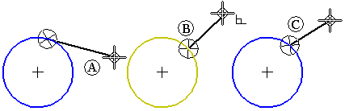

intent zone
A circular area, usually divided into four quadrants that allows you to specify how you want to draw an element. Intent zones are displayed when drawing a line that is connected to an arc or circle, or when drawing an arc connected to a line.
By moving the cursor through one of these intent zones on the way to your next click location, you can control whether the new element is tangent to, perpendicular to, or at some other orientation to the element it is connected to.
For example, when drawing a line that is connected to a circle, the intent zones allow you to draw the line tangent to the circle (A), perpendicular to the circle (B), or at some other orientation (C).

You define the size of the intent zone circle on the Cursor tab on the IntelliSketch dialog box.